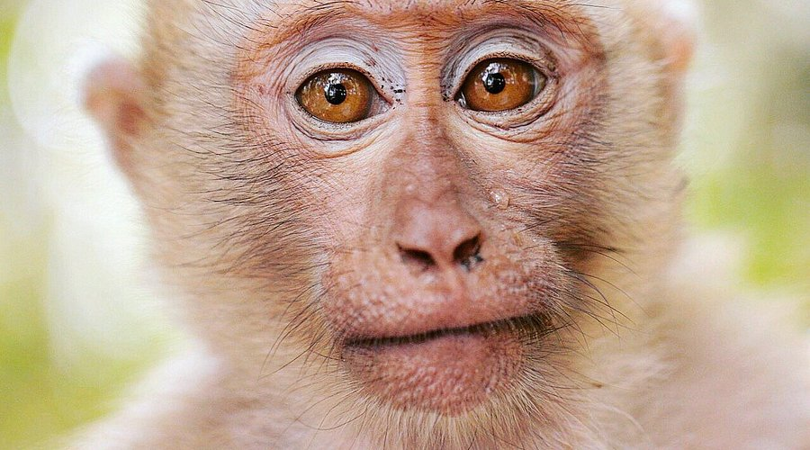

Monkey
Social primates that live in troops across forests.
- Species: Various primates
- Diet: Omnivore
- Size: 12-24 inches tall
- Weight: 8-30 lbs
- Life span: 15-30 years
- Habitat: Tropical forests
- Found: Africa, Asia, Americas
- Can be pet: No
Trivia: Many monkeys use their tails for balance and swinging through trees.